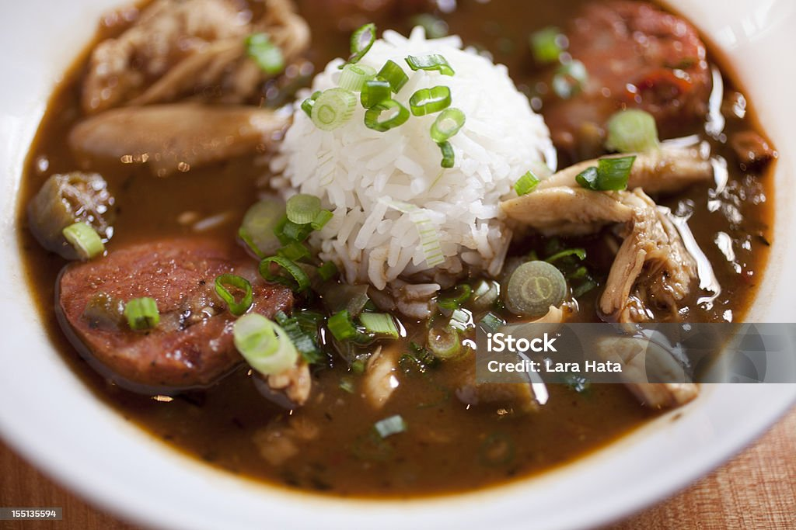
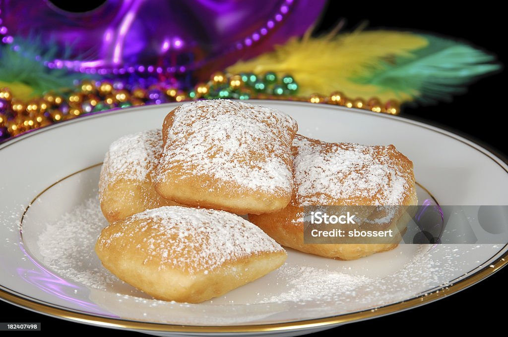

The jambalaya I make has a tomato sauce base. It contains sausage, green bell
peppers, and onions. After I make the sauce I combine it with the cooked rice.
My family loves this recipe and it makes enough to enjoy leftovers the next day
or share with others.
Gumbo

I use a roux to start my gumbo. A roux is a mix of oil and flour sauteed to the
desired color of the roux. After that I add water, chicken and onions. After the
chicken is cooked, I add the sausage and vegetables. I usually use green bell
peppers, okra, and other seasonings in my gumbo. I serve it over rice. This is
perfect for a cold winter day.
Beignets

I have never made beignets from scratch although I've always wanted to try it.
I did grow up eating them and have hadthe privledge of sharing this amazing
dessert with my midwestern family. There are many recipes online as well as
box mixes.
Louisiana Wildlife
Animal
Habitat
Alligator
Freshwater, slow-moving rivers
Boars
Tidal marshes to timbered areas
Black Bear
Forrested wetlands of the Mississippis Alluvial Valley
Water Moccasin
Slow-moving waters
Nutria
Permanent water sources, i.e. rivers, streams, and wetlands